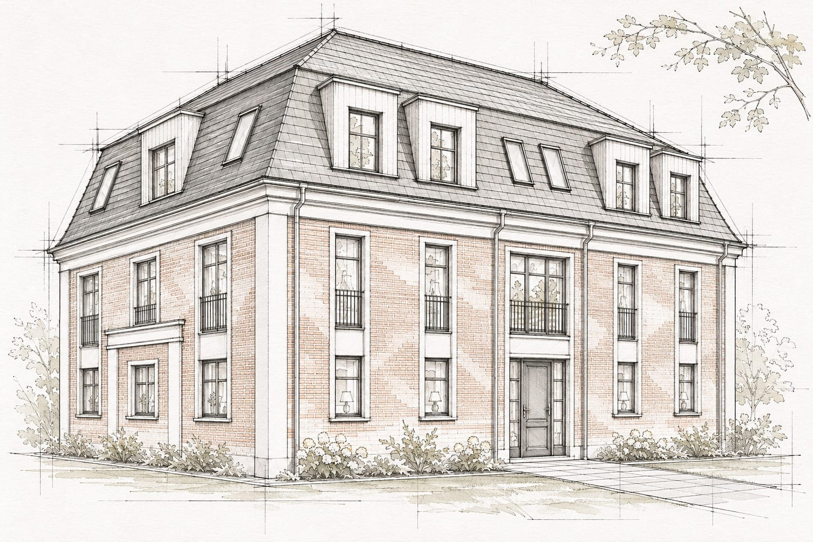
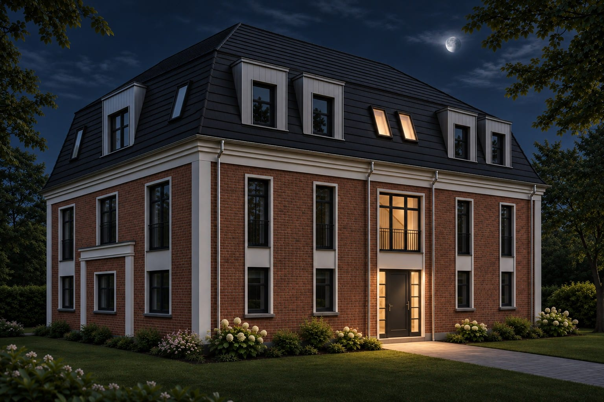
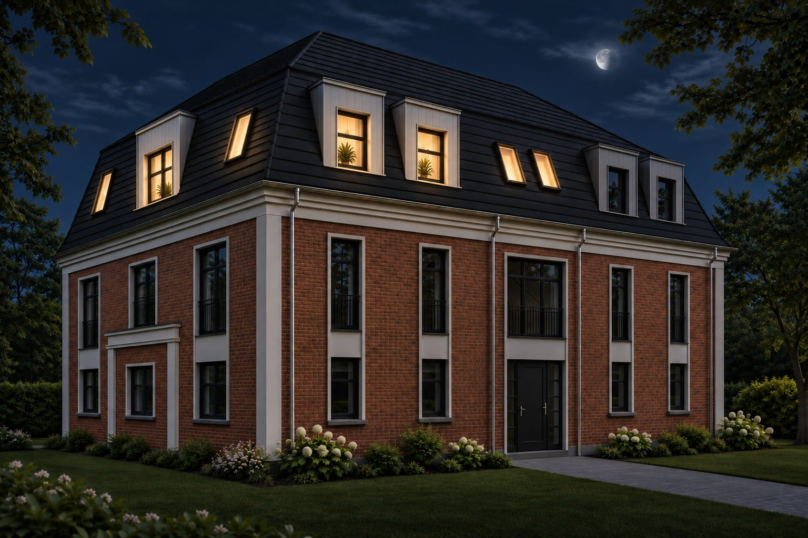
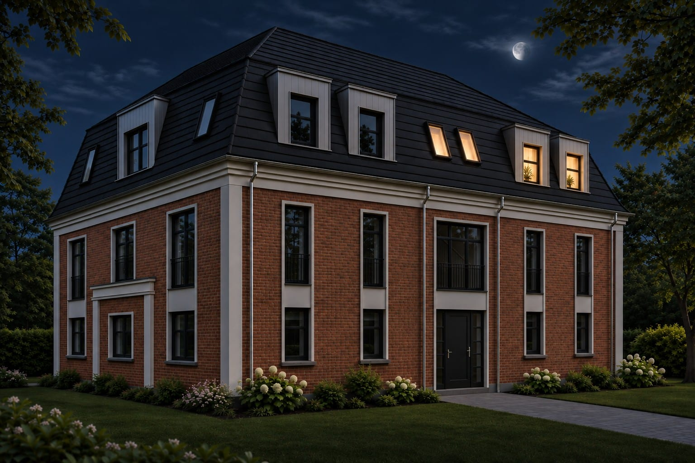
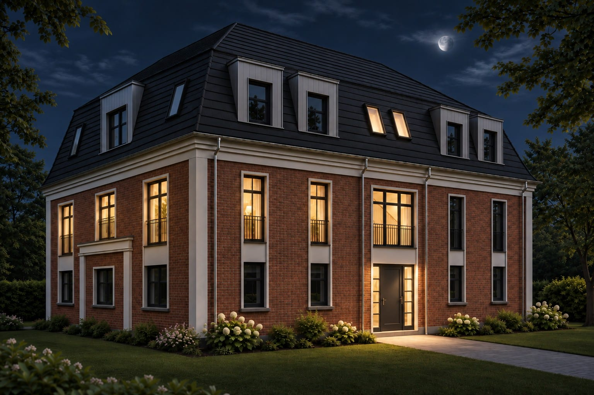
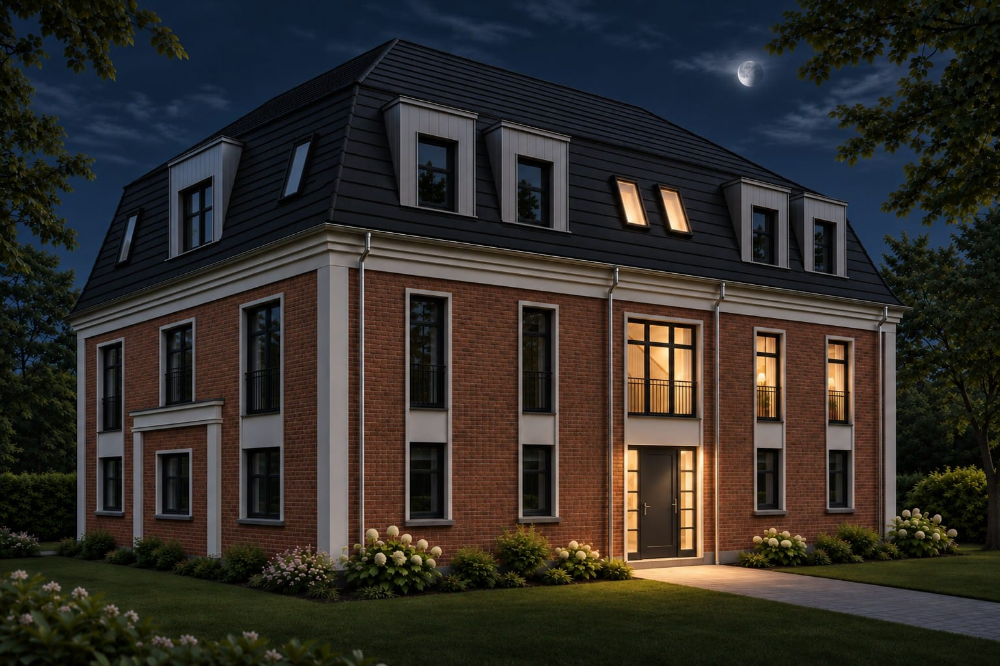
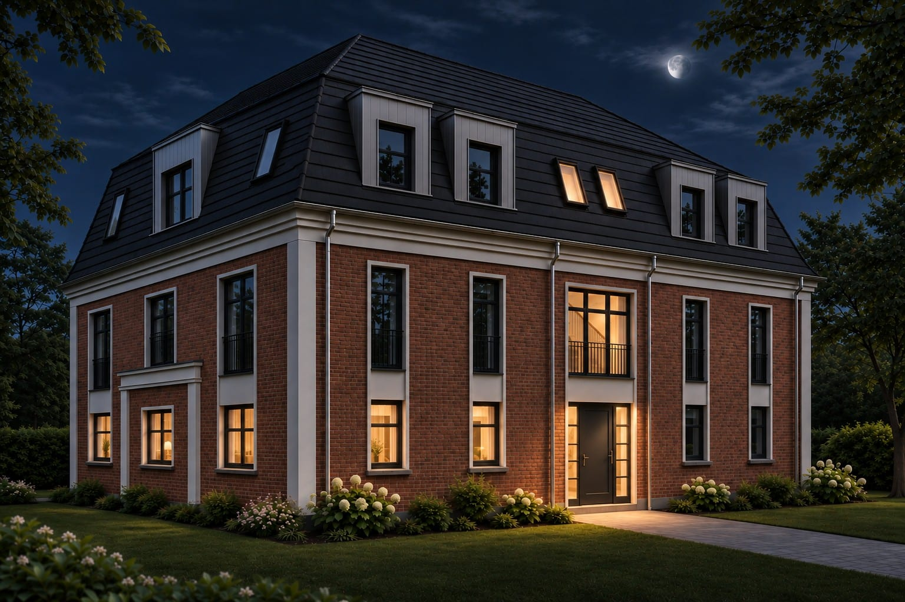
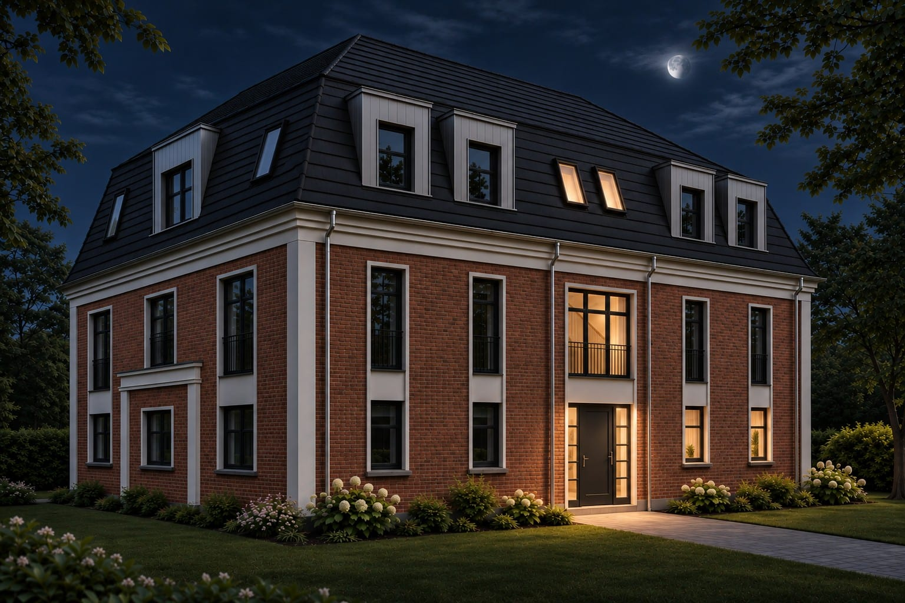

Neues Projekt · Hamburg-Schnelsen
Wählingsweg
24.
Sechs Eigentumswohnungen in einer klassischen Stadtvilla in Hamburg-Schnelsen.
- Wohneinheiten
- 6
- Zimmer je Wohnung
- 2–3
- Wohnfläche je Wohneinheit
- ca. 59–85 m²



Das Projekt
Klassisch gebaut.
Modern gedacht.
Am Wählingsweg 24 entsteht eine Stadtvilla mit sechs Eigentumswohnungen: Klinker in warmen Rottönen, helle Faschen und ein dunkles Mansarddach mit Gauben.
Je Geschoss liegen zwei Wohnungen mit zwei oder drei Zimmern, verbunden über ein gemeinsames Treppenhaus. Hohe Sprossenfenster mit französischen Balkonen holen viel Tageslicht in die Räume.
Der Baubeginn steht kurz bevor.
6 Wohnungen mit 2–3 Zimmern
Ca. 59 bis 85 m² Wohnfläche, verteilt auf drei Geschosse.
Terrasse & Garten im Erdgeschoss
WE 1 und WE 2 mit eigener Terrasse und Gartenanteil.
Dachterrasse & Loggien
WE 4 mit Dachterrasse, WE 5 und WE 6 mit Loggia.
Klassische Architektur
Klinkerfassade, helle Faschen und Mansarddach mit Gauben.
Frühzeitig vormerken
Wir informieren Sie, sobald der Vertrieb startet.
Einblicke
Vier Seiten.
Eine Handschrift.
Klinker in warmen Rottönen, helle Faschen und ein dunkles Mansarddach mit Gauben – von jeder Seite ein ruhiges, klassisches Bild.
Alle Ansichten sind KI-generierte Visualisierungen.
Objektdaten
Das Projekt im Überblick.
| Standort | Hamburg-Schnelsen |
|---|---|
| Adresse | Wählingsweg 24 |
| Projekt | Stadtvilla · 6 Eigentumswohnungen |
| Wohn-/Nutzfläche | ca. 59 bis 85 m² je Wohnung |
| Zimmer | 2 bis 3 |
| Geschosse | Erdgeschoss, Obergeschoss und Dachgeschoss |
| Außenbereich | Terrassen mit Garten, Dachterrasse, Loggien |
| Baufortschritt | Baubeginn in Kürze |
Ihr neues Zuhause
Sechs Wohnungen.
Persönliche Beratung.
Sie möchten sich frühzeitig eine Wohnung vormerken lassen? Gerne beraten wir Sie persönlich.
Kontakt aufnehmenGrundrisse
Sechs Wohnungen.
Ein Klick – das Licht geht an.
Wählen Sie eine Wohnung direkt am Haus oder in der Liste. Die Wohnung wird beleuchtet und ihr Grundriss erscheint.







Wählen Sie eine Wohnung
Klicken Sie auf das Haus oder auf eine Wohnung in der Liste.
| Wohnen / Essen / Küche | ca. 34,73 m² |
|---|---|
| Zimmer | ca. 10,81 m² |
| Bad | ca. 6,20 m² |
| Abstellräume | ca. 6,04 m² |
| Loggia 3,64 m² (50 %) | ca. 1,82 m² |
| Wohnfläche | ca. 58,73 m² |
| Wohnen / Essen / Küche | ca. 34,73 m² |
|---|---|
| Zimmer | ca. 10,81 m² |
| Bad | ca. 6,21 m² |
| Abstellräume | ca. 6,04 m² |
| Loggia 3,64 m² (50 %) | ca. 1,82 m² |
| Wohnfläche | ca. 58,74 m² |
| Wohnen / Essen / Küche | ca. 30,54 m² |
|---|---|
| Zimmer 1 | ca. 13,23 m² |
| Zimmer 2 | ca. 6,12 m² |
| Bad | ca. 10,78 m² |
| Flur | ca. 7,97 m² |
| Abstellräume | ca. 6,03 m² |
| Wohnfläche | ca. 73,55 m² |
| Wohnen / Essen / Küche | ca. 30,54 m² |
|---|---|
| Zimmer 1 | ca. 13,23 m² |
| Zimmer 2 | ca. 6,22 m² |
| Bad | ca. 10,61 m² |
| Flur | ca. 7,97 m² |
| Abstellräume | ca. 6,06 m² |
| Dachterrasse 3,18 m² (50 %) | ca. 1,59 m² |
| Wohnfläche | ca. 75,22 m² |
| Wohnen / Essen / Küche | ca. 31,04 m² |
|---|---|
| Zimmer | ca. 14,88 m² |
| Bad | ca. 7,41 m² |
| Flur | ca. 6,04 m² |
| Abstellräume | ca. 6,01 m² |
| Terrasse 16,00 m² (50 %) | ca. 8,00 m² |
| Wohnfläche | ca. 72,40 m² |
| zzgl. Garten inkl. Terrasse | ca. 90,00 m² |
| Wohnen / Essen / Küche | ca. 30,10 m² |
|---|---|
| Zimmer 1 | ca. 11,98 m² |
| Zimmer 2 | ca. 10,47 m² |
| Bad | ca. 11,31 m² |
| Flur | ca. 8,46 m² |
| Abstellräume | ca. 6,07 m² |
| Terrasse 16,00 m² (50 %) | ca. 8,00 m² |
| Wohnfläche | ca. 85,21 m² |
| zzgl. Garten inkl. Terrasse | ca. 74,50 m² |
Der Standort
Hamburg-Schnelsen.
Hier beginnt Zuhause.
Die Stadtvilla entsteht in ruhiger Wohnlage am Wählingsweg 24 in Hamburg-Schnelsen, im grünen Nordwesten der Stadt. Eine gewachsene Nachbarschaft prägt das Umfeld.
- Einkaufsmöglichkeiten, Cafés und Restaurants in der Nähe
- Schulen und Kindergärten im Umfeld
- Hamburger Innenstadt in rund 25 Minuten erreichbar
Sprechen Sie uns an – wir erzählen Ihnen gerne mehr über das Projekt und seine Umgebung.
Kontakt aufnehmenPersönlich für Sie da
Lassen Sie sich
frühzeitig vormerken.
Sie interessieren sich für eine der sechs Wohnungen am Wählingsweg 24? Wir freuen uns auf Ihre Anfrage.